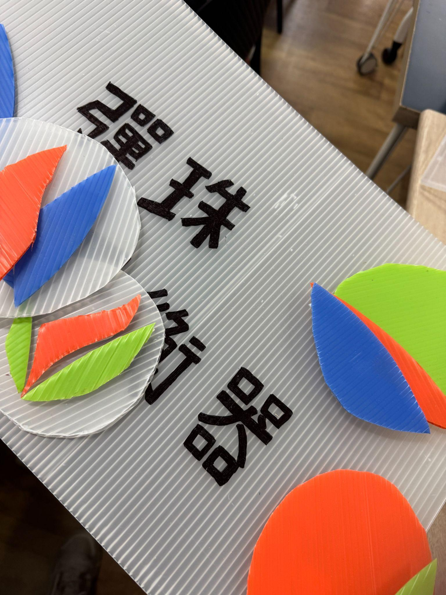
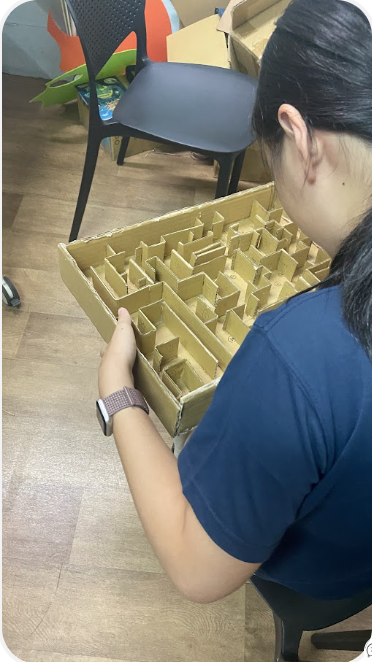
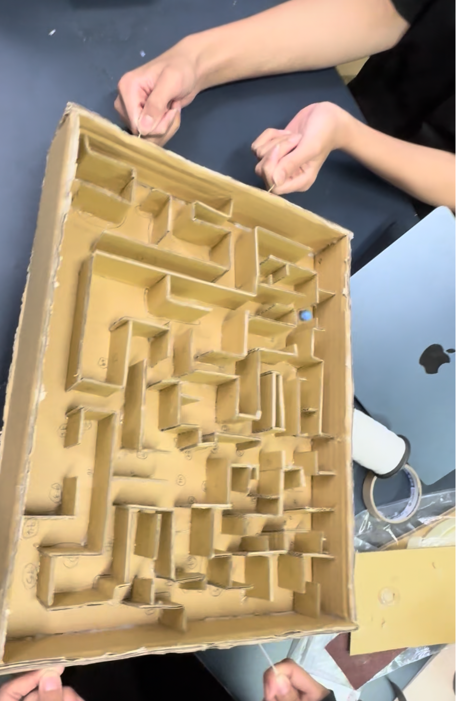
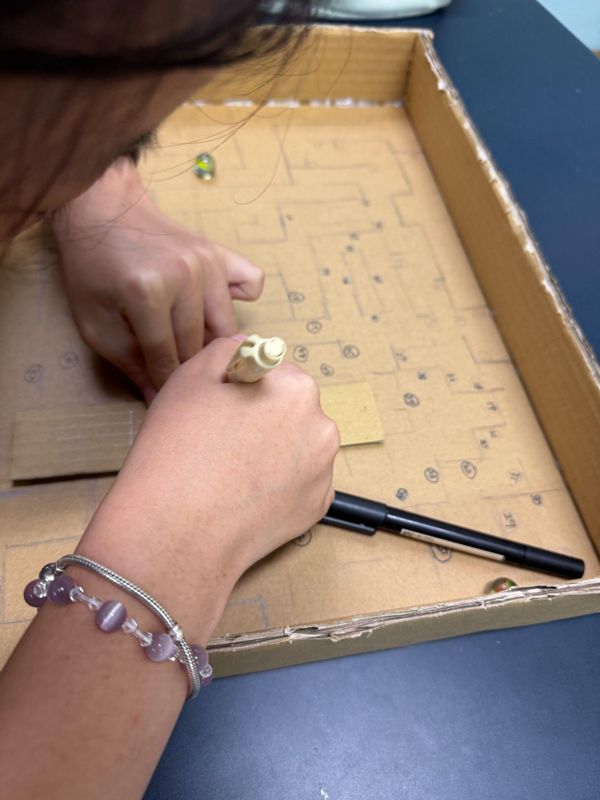
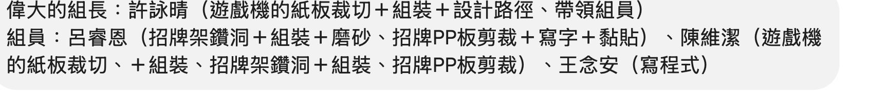

G組
組員：許詠晴、陳維潔、呂睿恩、王念安｜組長：許詠晴

是一個迷宮，彈珠會在迷宮裡移動，並且要找到相應的按鈕之後才算通關，反之失敗。
我們會在迷宮的兩側放置兩條繩子，兩個玩家要拿著繩子去移動彈珠，在遊戲中，他們要收集迷失的信物，找到信物按鈕，按下之後有發出聲音就代表成功了，若在時間內沒有找到信物就算失敗。
用紙板去操控彈珠的走向，用微動開關去當作收集信物的按鈕，按到這個按鈕，就會發出聲音，這樣的原理會用processing 加上Arduino Uno去做出來。
要安裝上微動開關並且試運行，然後做好遊戲規則，想一下另外一個可以移動然後有創意的方法。


製作迷宮牆壁&迷宮模型

木工+迷宮牆壁

製作招牌+木工
編程